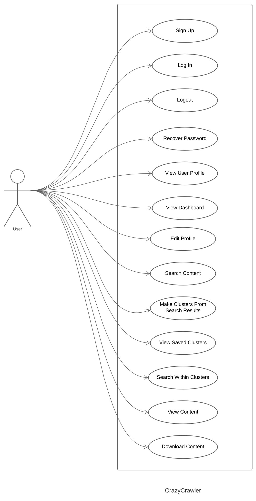

1. Introduction
1.1 Purpose
This document details the project plan for the development of “crazyCrawler.”
Apart from project investors, this document is intended for the developers, designers, testers, professional
and personal users who are working on “crazyCrawler.”
This plan includes a summary of:
- How the system is going to function
- The technology and interfaces used for the development of the project
- Scope of the project from the development viewpoint
- System Features
- Other nonfunctional Requirements
- Overall Description
Many big data companies depend on data that is scraped from the internet. They heavily depend on web
crawlers. Often their job gets messy when they are trying to
fetch files like pdfs, documents or texts. We are developing a search engine which any data driven company/
user can use to easily fetch the document they are looking
for. It is as easy as putting a URL in the search bar and choosing what files to get, and viola they will
have all links leading to such files crawled and indexed for
them. Users can use this intuitive search engine not only to easily fetch such files, but also to create
clusters on this data.
1.2 Document Conventions
The following conventions are used in this doucment:
| DB |
Database |
| RDBMS |
Relational Database Management
System |
| ER |
Entity Relationship |
1.3 Intended Audience and Reading Suggestions
Apart from project investors, this document is intended for the developers, designers, and testers who are
working on “crazyCrawler.”
Reading Suggestions: Sequentially
1.4 Prouduct Scope
Many big data companies depend on data that is scraped from the internet. They heavily depend on web
crawlers. Often their job gets messy when they are trying to
fetch files like pdfs, documents or texts. We are developing a search engine which any data driven company/
user can use to easily fetch the document they are looking
for. It is as easy as putting a URL in the search bar and choosing what files to get, and viola they will
have all links leading to such files crawled and indexed for
them. Users can use this intuitive search engine not only to easily fetch such files, but also to create
clusters on this data.
1.5 References
IEEE Template for System Requirement Specification Documents: https://goo.gl/nsUFwy
2. Overall Description
2.1 Product Perspective
"crazyCrawler" is a new, self-contained product designed with the aim to make web searching easier,
efficient and organized. It is a self-sustaining product without any subsystem or integrable part as of the
current release. The product is for any individual or group looking to search data from the web in a
precisely effective manner. Using it will enable users to make clusters of URLs and search for specific
contents in their cluster. Users can download, store and use the contents easily and efficiently. Especially
for the regular users, fast scraping of data using web crawlers is of great importance. With the aim to make
it easier for them, the product is developed.
2.2 Product Functions
The following functionalities are included in the product:
- Sign Up: User will sign up using a sign up form, google or facebook account.
- Login: User will login to their respective accounts after creating it via the form, google or facebook
accounts.
- Logout: User will be able to logout of the system upon completion of use.
- Recover Password: User will be able to recover their lost / forgotten password. This option will be
available in the login page.
- View User Profile: Users will be able to view their profile information.
- View Dashbaord: Users can view a dashboard in their profile
- Edit Profile: User will be able to edit their account, i.e. change profile photo, edit username, reset
password and edit other informations on the profile.
- Search Content: User will search the website via a search engine for finding the desired websites to be
added to a cluster.
- Make Clusters from Search Results: User will add the URLs of the desired websites to a selected cluster
after searching the web.
- View Saved Clusters: Saved clusters can be viewed which idex links to contents.
- Search Within Clusters: User will be able to search for a specific content type in a specific cluster
after making the cluster. The content types may be PDF, text, doc, non-html files or all types of contents
mixed.
- Download / Save content: User will be able to download the searched contents into their system.
2.3 User Classes and Characteristics.
The following user classes are classified based on the type of use of the product:
- Professional Users: This includes any user who will be using the product for their professional work
under any company, organization or institution. They are the most important category of users who will,
perhaps use the product most frequently and at a large scale. A large quantity of data will be required to
be scraped by them for their works and this product will be of utmost urgency for them.
- Personal Users: This class of users will be anyone who uses the product for their personal uses only.
Any individual such as a student, teacher, an employee or anyone who uses the product for non-professional
work are included in this category. After professional users, this category of users are the most
important.
- Developers: This group of people are the programmers who are and will be working on the product in order
to further develop it, maintain it and update it in the future. They will be using the product to test if
it is working correctly, to update certain features and maintain them on a regular basis.
2.4 Operating Environment
The product will be suitable for the following hardware platforms:
- Computers
- Mobile Phones
- Tablets
The product will be suitable for the following operating systems:
- Web Application: Any operating system having the following web browsers: Internet Explorer, Chrome or
Brave
- Android Application: Only available for the devices with Android operating system.
The product will be compatible with any version of the aforementioned hardware platforms and operating system
releases.
2.5 Design and Implementation Constraints
From the part of the developers, there are some limitations. Such as, many websites (like amazon.com) do
not allow data crawling from their website. There are many such websites who have certain constraints over
data crawling. This is a limitation from the develper's end. In addition, the memory constraint is also a
limitation from the developer's end. All the data in all the websites need to be scraped and saved into the
database, which might lead to some memory issue. Lastly, since the product is for web and android only, it
will not be available for the users of operating systems other than android.
In order to use the product from any device other than android, the user must be using the web application.
In the making of the product, Django framework has been used with the integration of Rest API in the
backend. HTML, CSS, and JavaScript is used in the frontend of the web application. The product is developed
in Python for the web application and in Kotlin for the mobile application. The platform PyCharm is used to
manage, edit and integrate the different parts of the product. For the maintenance of the delivered product,
the developers themselves will be responsible and no intermediate oragnization will be involved.
2.6 User Documentation
As of the current release, no user manual, online help, tutorials or any sort of user documentation will be
released for the product. The product is very straight-forward and easy to use. Users will be able to use
the product without any sort of guide or help whatsoever. However, in the future releases, if any advanced
features are added to the product for which we think user documentation will be required, it will be
released then.
2.7 Assumptions and Dependencies
As for the web application part of the product, a browser is required to access it. It is assumed that the
browser that the user uses is compatible with the most updated version of HTML, CSS and JavaScript. It is
assumed that the browser is able to render, integrate and display the application correctly.
As for the mobile application part of the product, Kotlin will be used, which interoperates fully with
Java. So, it is assumed that the user will have Java installed on their phone. All these dependencies are
static and the smooth ruunning of the product depends on these factors.
The system will be integrated with the Facebook and Google APIs for sign-up and login. Therefore, the system will be dependent on the data of the mentioned APIs for smooth running and conduct.
3. External Interface Requirements
3.1 User Interfaces
The user interface for the search engine shall be compatible to any web browser Internet Explorer, Chrome
or Brave by which user can access to the system. In addition to that it shall be compatible with mobile.
There will be multiple layers of interface between the software product and the users.
User interface specifications:
- Sign up: Field for email, password and confirm password would be here for a user to sign up for an
account. Upon clicking the button for sign up it would save the data and give a message of the account
being successfully created. And if the user already has an account, upon clicking the login button it
would go to the login page.
- Login: A user will be able to login using social media sites like Google or Facebook along with having
the option of signing in using just a username and password. And lastly clicking the sign in button it
would login to a user’s account. It would also have the option of returning to the sign up page if a user
has not made an account. There would be a button for recovering password as well.
- Password recovery: A field for entering email would be there and clicking the reset password would send
the verification to the mail for resetting the password. It would also have a button to go back to the
login page.
- Search: Upon giving the url in the field and clicking the search button will send the user to the result
page. A user can also select different content type such as text, doc and pdf files to search./li>
- Result: The user can see the search results of the url ad visit the website links.
- User profile: The user can save and edit information. An option for deleting account and resetting the
password would be there.
- Search with clusters: The user will be able to search from the clusters made. It can also make a cluster
and edit it from the navigation bar.
- Saved clusters: The user can view the saved clusters.
- Dashbaord: The user can easily navigate to the clusters, search, about and settings upon clicking the
buttons.
3.2 Hardware Interfaces
All the hardware is required to connect to the internet, which will be hardware interface for the system.
3.3 Software Interfaces
The following are the software interfaces used for the project:
| Operating system |
We have chosen Windows as the
operating system for its user-friendliness |
| Database |
To store user data, search data
and cluster data we have chosen mySQL database |
| Web Browsers (Any) |
The web app opens in any web
browser |
This project supports all types of web browsers.
The requirements associated with communications functions by this product includes forms, emails and social
media platforms.
Through emails or social media connection, data would be in sync, authentication will be verified and
recovery of account of a user would be possible.
It shall use the HTTP protocol for communication over the internet.
4. System Features
4.1 Use Case Diagram

Figure: Use Case Diagram
4.2 Expanded Use Case
4.2.1 Signup
Use case: Signup
Precondition: None
Actor: User
Goal: To signup for an account
Overview:
Users can signup for an account using a valid email address or using a Google / Facebook account.
Priotrity: Medium
Cross Reference:
R2, R4, R8
Typical course of events:
Actor:
1. User chooses to signup
3. User inputs valid email address and password
System Response:
2. Display signup form
4. Display successful signup message
5. Redirect user to login page
Alternate course of events:
Steps 3-5: The user doesnt provide a valid email and cannot signup.
4.2.2 Login
Use case: Login
Precondition: User must have executed "Signup" at any time in the past
Actor: User
Goal: To log in to user account
Overview:
Users can provide their emails and passwords saved in to the system when they signed up.
Or they can directly login using their Google / Facebook account.
Priotrity: Medium
Cross Reference:
R3, R5, R6, R7, R8, R9, R10, R11, R12, R13
Typical course of events:
Actor:
1. User chooses to login
3. User provides email and pass
System Response:
2. Display login form
4. Display successful login message
5. Redirect user to dashboard page
Alternate course of events:
Step 3: User chooses to log in through Google/Facebook account.
4.2.3 Logout
Use case: Logout
Precondition: "Login" must have been executed
Actor: User
Goal: To log out of user account
Overview:
Users can log out of their accounts after they had logged in.
Priotrity: High
Cross Reference:
R1, R2, R4, R8
Typical course of events:
Actor:
1. User chooses to logout
System Response:
2. Display successful logout message
3. Redirect to login page
Alternate course of events:
4.2.4 Recover Password
Use case: Recover Password
Precondition: 'Sign up' must be executed
Actor: User
Goal: To recover account if password forgotten
Overview:
Within the recover password the user will be able to reset password through email and able to sign in their
account
Priotrity: Medium
Cross Reference:
R1, R8
Typical course of events:
Actor:
1. Choose forgot password
3. Input email address
4. Enter new password
System Response:
2. Display a bar to enter email address
3. Displays reset password option
Alternate course of events:
Step 3: The user creates a new account and logs in with that new account.
4.2.5 View User Profile
Use case: View User Profile
Precondition: 'Log In' must be executed
Actor: User
Goal: To able to view user information
Overview:
Within the user profile, the user can view all information related to the user's account
Priotrity: Low
Cross Reference:
R3, R6, R7, R8
Typical course of events:
Actor:
1. Select user profile
System Response:
2. Displays all information of the user
Alternate course of events:
4.2.6 View Dashboard
Use case: View Dashaboard
Precondition: 'Log in' must be executed
Actor: User
Goal: To be able go to different menu
Overview:
Within dashboard the user can go to their account, search and view clusters.
Priotrity: Medium
Cross Reference:
R3, R5, R8, R10
Typical course of events:
Actor:
1. Choose Dashboard
2. Select search.
System Response:
3.Display search bar to search
Alternate course of events:
Step 2 and 3: The user can also choose to select account information, about, or clusters for
which it shows those information.
4.2.7 Edit Profile
Use case: Edit user profile information
Precondition: 'Log in’ must have been executed
Actor: User
Goal: To change or edit any information of a user
Overview:
When the user logs in their account and they choose to edit any information of their account.
Priotrity: Low
Cross Reference:
R3, R5
Typical course of events:
Actor:
1. The user chooses to edit account
3. The user can change birthdate, email and phone number.
System Response:
2. Displays edit mode.
4. Displays the information after changing
Alternate course of events:
Step 4: The user can delete account. They can also reset password.
4.2.8 Search Content
Use case: Search content
Precondition: None
Actor: User
Goal: To search for content within a URL
Overview:
Users can provide a url in the search bar and select the depth it wants the site to be crawled. The user
also specifies the type of
content he/she wants to be indexed from this URL.
Priotrity: High
Cross Reference:
R3, R5, R9
Typical course of events:
Actor:
1. Provide URL
2. Choose depth
3. Select content type: PDF
4. Search
System Response:
5. Show search result
Alternate course of events:
Step 3: The user can also select other content type such as DOC, .TXT FILES, ALL CONTENTS,
NON-HTML CONTENTS etc. and search.
4.2.9 Make Clusters From Search Results
Use case: Create clusters on search results
Precondition: "Search Content" must be executed
Actor: User
Goal: To create clusters on search results
Overview:
The search results obtained from the search page can be saved into clusters. Users can access these from
their profiles.
Priotrity: High
Cross Reference:
R3, R10
Typical course of events:
Actor:
1. Save search results
2. Form clusters
System Response:
3. Save clusters in database
4. Redirect user to saved cluster list
5. Display clusters in user's saved cluster list
Alternate course of events:
Steps 2-5: User's limit for creating clusters might be exceeded and they cannot create anymore
clusters.
4.2.10 View Saved Clusters
Use case: Search within clusters
Precondition: Create clusters must be executed
Actor: User
Goal: To search within clusters
Overview:
Within the saved clusters users can search for anything by providing keywords.
Priotrity: High
Cross Reference:
R3, R11
Typical course of events:
Actor:
1. Choose saved cluster
System Response:
2. Display results in cluster search page
Alternate course of events:
4.2.11 Search within clusters
Use case: Search within clusters
Precondition: "Create Clusters" must be executed
Actor: User
Goal: To search within clusters
Overview:
Within the saved clusters users can search for anything by providing keywords.
Priotrity: High
Cross Reference:
R3. R12
Typical course of events:
Actor:
1. Choose saved cluster
2. Input search keyword
3. Search within saved clusters
System Response:
4. Display results in cluster search page
Alternate course of events:
Steps 2-4: User enters keyword that is not found anywhere in the cluster.
4.2.12 View Content
Use case: View Content
Precondition: "Search Content" must be executed
Actor: User
Goal: To view content following links indexed in the search result/ cluster
Overview:
Within the search results/ saved clusters links to contents of a type (previously chosen by the user)
are listed. Each link leads the user to the content. From there they can view the content.
Priotrity: High
Cross Reference:
R3, R13
Typical course of events:
Actor:
1. Select a link indexed in the search results/ cluster
4. View content in the link
System Response:
2. Redirect user to the content in the link
3. Display content in the link
Alternate course of events:
4.2.13 Download Content
Use case: Download Content
Precondition: "View Content" must be executed
Actor: User
Goal: To download content following links indexed in the search results/ cluster
Overview:
Within the saved clusters links to contents of a type (previously chosen by the user) are listed.
Each link leads the user to the content. From there they can download the content.
Priotrity: High
Cross Reference:
Typical course of events:
Actor:
1. Open content indexed by the URL
3. Choose to download content
System Response:
2. Display content
4. Download content to local device
Alternate course of events:
Steps 3-4: User does not download the content.
5. Other Nonfunctional Requirements
The performance of the product is dependent upon the hardware of the user as the product shall be based on
the web. It shall run from a web server so the performance speed and load time lies on the strength of the
internet connection. The user device must have a running web browser version of Google Chrome, Internet
Explorer or Brave. For the android application, the user device must have a minimum Android OS version xyz.W
5.2 Safety Requirements
To ensure that no data loss of users happen using this product. And to secure that, the developer team is
to do regular updates and backup. The developers are solely responsible for the safety measures and regular
checking and testing for bugs. No safety certification should have to be followed in particular.
5.3 Security Requirements
The product must follow industry recommended practices for secure software development. At a minimum, the software development team must practice the principle of least privilege for defining access-level requirements of the software system and its associated services. The following specific security measures must be ensured:
- Local DNS servers should be tested for their response to high work loads. The Web crawler should detect a condition in which, for example, if 90% of DNS lookups failed during one cycle, it should stop. The Web crawler also could avoid resolving more than a fixed number of domain names at the same time and with the same DNS server.
- The crawler should re-try each web page a number of times if the page is down, and the interval should be several hours.
- The crawler should avoid overloading Web sites.
- All network operations should have a timeout. The crawler must be prepared, because at any point of the download operation it could stop receiving data.
- Besides a timeout, a lower speed limit should be enforced by the crawler to ensure smooth crawling of data.
- Higher server bandwidth should be ensured for greater user traffic associated with the product.
5.4 Software Quality Attributes
- Availability: It should be ensured that the system is operating properly when it is requested for use. In other words, it should be ensured that a system is not failed or undergoing a repair action when it needs to be used.
- Maintainability: It should be ensured that the system can be modified to correct faults, improve performance or other attributes, or adapt to a changed environment.
- Adaptability: It is to be ensured that the system adapts to change in its environment. An adaptable software system can tolerate changes in its environment without external intervention and tolerate some deviations in the environment.
- Flexibility: It must be ensured that the system will respond to potential internal or external changes in a timely and cost-effective manner.
- Interoperability: It must be ensured that the product is capable of different solutions and that they can communicate with one another freely and easily. The system can exchange information in real-time, without the need for specialized IT support or behind-the-scenes coding.
- Portability: It must be ensured that the product is able to run properly in a different platform to the one it was designed for, with little or no modification. Where modification is needed, the task of modifying the software to allow it to run in the new environment by porting must be ensured.
- Reliability: Reliability must be ensured via a failure-free operation of the product for a specified period in a specified environment. The product must be reliable in an operational environment with excellent accuracy.
- Reusability: Reusability must be ensured through the use of existing assets in some form within the software product development process. These assets are products and by-products of the software development life cycle and include code, software components, test suites, designs and documentation.
- Correctness: It must be ensured that the product responses accurately to the user when the user uses it accurately. Strict adherence to how the users can interact with the software should be ensured.
- Robustness: The software product must be robust, i.e. the product should be able to function properly in the presence of various invalid inputs and stressful environments. The product should not break down and become dysfunctional immediately under these circumstances.
- Testability: The product should have a high degree of supporting unit testing in a given text context. If the testability of the product is good, finding faults in the system will be very easy if the system has one.
- Usability: It should be ensured that the usability of the product is strong. That is, the quality of a user's experience when using the product should be good. Effective, efficient and satisfactory experience is the target of this product.
5.5 Business Rules
The following business rules must be followed in the making of the product:
- There will be no admin dependency of the product.
- The developers will be responsible for for all back-end system configurations.
- The developers will be responsible for all schemas and templates.
- The developers will be responsible for maintaining and supervising all the user accounts.
- The developers will be responsible for maintaining all the predefinded queries.
- The users must create an authenticated account in order to make clusters and search within the clusters.
6. Other Requirements
Appendix A: Glossary
- Application Programming Interface (API): A system of tools and resources (e.g., subroutine definitions, protocols) in an operating system that enables developers to create
software applications.
- Extensible Markup Language (XML): A markup language that defines a set of rules for encoding documents in a format that is both human-readable and machine-readable in accordance with the World Wide Web Consortium (W3C) specification.
- HyperText Markup Language (HTML): The standard markup language for creating web pages and web applications in accordance with ISO/IEC 15445 and W3C HTML5.
- HyperText Transfer Protocol (HTTP): An application protocol for distributed, collaborative, and hypermedia information systems in accordance with RFC 7230 and RFC 7540.
- HyperText Transfer Protocol Secure (HTTPS): A communications protocol for secure communication over a computer network using Hypertext Transfer Protocol (HTTP) within a connection encrypted by Transport Layer Security (TLS), or its predecessor, Secure Sockets Layer (SSL).
- Entity Relationship Diagram (ERD): A graphic representation of an entity-relationship model.
- Software Requirements Specification (SRS): A requirements specification pertaining to a software system.
- Unified Modeling Language (UML): A standardized language
for modeling problems or solutions.
- Database (DB): A structured set of data held in a computer, especially one that is accessible in various ways.
- Relational Database Management System (RDBMS): The software used to store, manage, query, and retrieve data stored in a relational database.
- User Interface (UI): The user interface (UI) is the point of human-computer interaction and communication in a device. This can include display screens, keyboards, a mouse and the appearance of a desktop. It is also the way through which a user interacts with an application or a website.
- Actor: A person, a system or a technical device in the context of a system that interacts with the system.
- Bug: Any kind of defect in a product.
- Class: Represents a set of objects of the same kind by describing the structure of the objects, the ways they can be manipulated and how they behave.
- Constraint: A requirement that limits the solution space beyond what is necessary for meeting the given functional requirements and quality requirements.
- Domain: A range of relevant things (for some given matter); for example, an application domain.
- Efficiency: The degree to which a result is achieved with minimum consumption of resources.
- Functionality: The capabilities of a system as stated by its functional requirements.
- Glossary: A collection of definitions of terms that are relevant in some domain. Frequently, a glossary also contains cross-references, synonyms, homonyms, acronyms, and abbreviations.
- Maintainability: The ease with which a software system can be modified to correct faults or adapt the system to changing needs.
- Model: An abstract representation of an existing reality or a reality to be created.
- Non-functional Requirement: A quality requirement or a constraint.
- Portability: The ease with which a system can be transferred to another platform (while preserving its functionality).
- Priority: Documents the importance of a requirement in comparison to other requirements according to given criteria.
- Quality: The degree to which a set of inherent characteristics of an entity fulfills requirements.
- Redundancy: Multiple occurrence of the same information or resource.
- Release: A configuration that has been released for installation and use by customers.
- Reliability: The capability of a system to maintain a specified level of functionality and performance when used under specified conditions.
- Security: The capability of a system to protect (a) its data and resources against unauthorized use and (b) its legitimate users against denial of service.
- Tool (in software engineering): A (software) system that helps develop, operate and maintain systems.
- Usability: The capability of a system to be understood, learned, used, and liked by its users.
- Use case: A description of the interactions possible between actors and a system that, when executed, provide added value.
- User: A person who uses the functionality provided by a system.
- Validation: The process of checking whether documented requirements match the stakeholders’ needs.
- Version: If an entity exists in multiple, time-ordered occurrences, where each occurrence has been created by modifying one of its predecessors, every occurrence is a version of that entity.
Appendix B: Analysis Methods
No specific analaysis methods will be needed to be used for the development of the product.
Appendix C: To be determined list
The following features and updates are to be determined in the future and they are required to be tracked:
- User Feedback: In the future, there should be a part in the UI of the product for accepting user inputs and messages via a feedback system. Utilizing these feedbacks, the developers will be able to work on bugs, fix certain issues and problems faced by the users while using the product.
- Media Files Crawling: In the future updates, along with the mentioned content-types that can be crawled, media files such as images, audio files and video files should be included too.